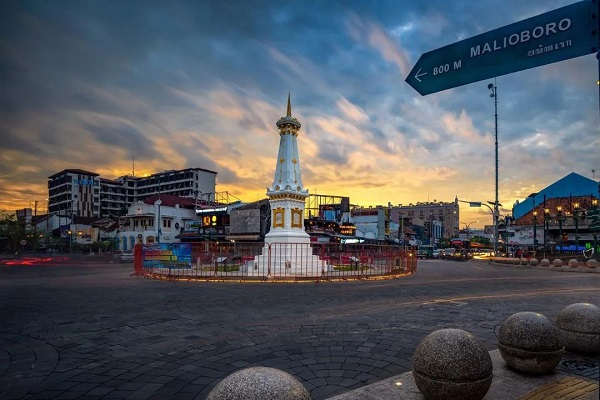
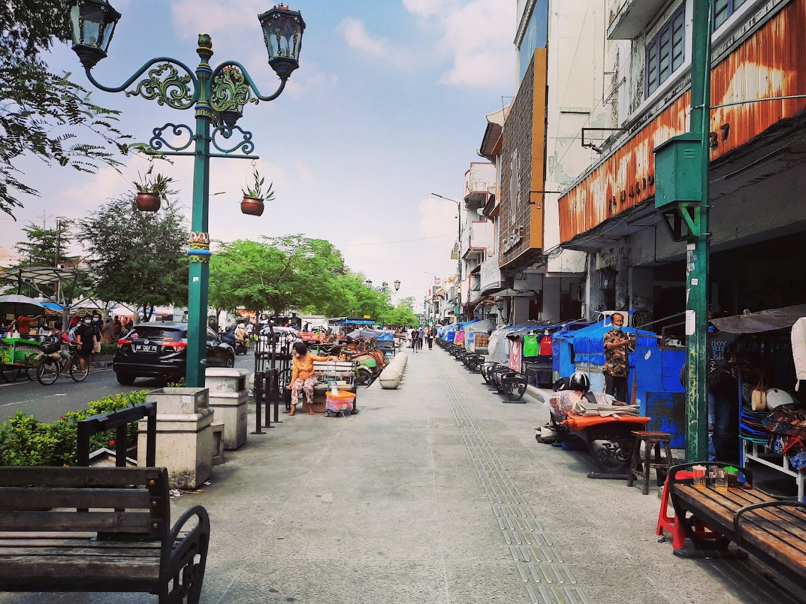

Sejarah

Kota Jogja lahir dari Perjanjian Giyanti (1755) yang membagi Mataram Islam, lalu mendirikan Kesultanan Ngayogyakarta Hadiningrat di bawah Sultan Hamengku Buwono (HB) I. Keraton resmi ditempati pada 7 Oktober 1756, yang kini diperingati sebagai hari jadi Kota Jogja. Di masa kolonial, Jogja menjadi pusat perlawanan besar rakyat Jawa melawan Belanda melalui Perang Diponegoro (1825–1830).
Saat Indonesia merdeka pada 1945, Sultan HB IX langsung menyatakan Jogja bergabung dengan NKRI. Jogja bahkan menyelamatkan republik dengan menjadi Ibu Kota Indonesia (1946–1949) saat Jakarta diduduki Belanda, serta melancarkan Serangan Umum 1 Maret 1949 untuk menegaskan kedaulatan Indonesia di mata dunia.
Atas peran historis tersebut, Jogja mendapat status Daerah Istimewa dengan Raja Keraton yang otomatis menjabat sebagai Gubernur. Kini, Jogja terus berkembang pesat sebagai pusat pendidikan, budaya, dan pariwisata utama di Indonesia.
Nama Yogyakarta (disingkat Jogja) berasal dari bahasa Sanskerta, yaitu Ayodhya (Yogya) yang berarti "damai/tidak dapat dikalahkan" dan Karta yang berarti "makmur". Secara harfiah, artinya "kota yang damai dan makmur".
Sultan Hamengku Buwono I menetapkan nama Ngayogyakarta Hadiningrat pada tahun 1755 dengan harapan kota ini menjadi pusat peradaban yang sejahtera. Dalam percakapan sehari-hari, masyarakat memendekkan pengucapannya menjadi Yogya atau Jogja agar lebih mudah dilafalkan.
Geografis
Yogyakarta terletak di bagian tengah pulau Jawa sisi selatan, dengan luas wilayah sekitar 32,5 kilometer persegi yang diapit oleh Kabupaten Sleman di utara dan Kabupaten Bantul di selatan. Secara topografi, wilayah ini membentang di dataran aluvial yang subur dan dialiri oleh tiga sungai utama, yaitu Sungai Code, Sungai Winongo, dan Sungai Gajahwong. Keberadaan Gunung Merapi yang aktif di sebelah utara menjadi benteng alam sekaligus pembentuk lanskap geografis khas Yogyakarta, yang menghubungkan garis imajiner dari puncak gunung hingga ke Pantai Selatan.
Dari segi iklim dan posisi geografis, Yogyakarta beriklim tropis basah dan kering (musim kemarau dan musim hujan) dengan suhu yang relatif hangat sepanjang tahun. Letaknya yang strategis di cekungan Gunung Merapi menjadikan tanahnya sangat subur untuk pertanian sejak zaman dahulu. Terlindung oleh benteng alam berupa Pegunungan Menoreh di sebelah barat dan Pegunungan Seribu di sebelah timur, tata letak geografis Yogyakarta dipandang sangat ideal dan bernilai spiritual, sehingga dipilih sebagai pusat peradaban, ibu kota kesultanan, hingga kota pendidikan dan budaya.
Wisata
Sektor pariwisata Yogyakarta berkembang pesat berkat kekayaan warisan budaya, sejarah, dan keindahan alamnya yang sangat beragam. Di kawasan pusat kota, wisatawan disuguhkan oleh destinasi sejarah dan budaya megah seperti Keraton Ngayogyakarta Hadiningrat, Istana Air Taman Sari, serta pusat kerajinan dan belanja ikonis di sepanjang Jalan Malioboro. Keberadaan candi-candi megah peninggalan masa lampau, seperti Candi Prambanan dan Candi Ratu Boko di bagian timur, makin memperkuat daya tarik Yogyakarta sebagai salah satu pusat peradaban dan destinasi budaya utama di Indonesia.
Selain wisata budaya, Yogyakarta juga menawarkan bentang alam yang memukau dari utara hingga selatan. Wisatawan dapat menikmati keasrian alam dan petualangan di lereng Gunung Merapi melalui tur jip, menjelajahi kesegaran perbukitan Menoreh di barat, hingga menikmati pesona deretan pantai berpasir putih dan tebing karang eksotis di kawasan Gunungkidul. Perpaduan antara keramahan masyarakat lokal, ragam kuliner khas seperti gudeg, serta kehidupan seni kontemporer yang hidup menjadikan Yogyakarta sebagai destinasi wisata yang selalu membendung kenangan dan menarik untuk dikunjungi kembali.
Lava Tour Merapi

Lava Tour Merapi by Amtra Journey menawarkan
pengalaman petualangan seru
menggunakan kendaraan jeep tangguh
menyusuri jalur sisa erupsi Gunung Merapi
dengan pemandangan alam lereng gunung yang menakjubkan
Jl. Malioboro

Jalan Malioboro adalah jantung kota Yogyakarta yang paling ikonik dan
tidak pernah sepi dari aktivitas wisatawan maupun warga lokal.
Kawasan perbelanjaan legendaris ini memadukan nuansa sejarah, budaya, dan
modernitas dalam satu garis jalan utama yang membentang dari Tugu Yogyakarta
hingga ke kawasan Titik Nol Kilometer.